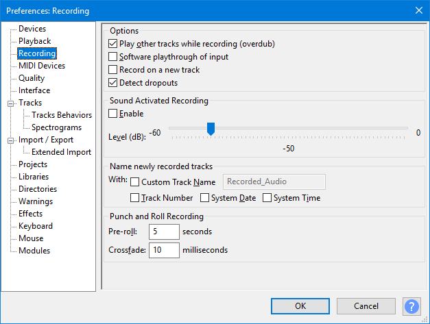
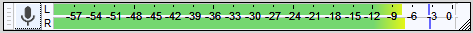

Tutorial - Recording audio playing on the computer
| Copyright or website restrictions may prevent you recording or distributing material. Check first. |
- To extract audio CD tracks to your computer, see Audio CDs.
- To import additional types of audio file or extract audio from video files, download and install FFmpeg, then import the file. FFmpeg can also extract audio from the individual VOB files stored on unencrypted DVDs.
Step 1: Set up devices to capture computer playback
This is often the hardest part of the overall task, being dependent on your computer operating system and soundcard. Many manufacturers are making it increasingly difficult to record streaming audio by deliberately removing or hiding this functionality due to copyright concerns. Sometimes, older soundcard drivers can be found on the website of the soundcard or motherboard manufacturer that still allow recording of computer playback.
This section of the tutorial shows how to find a suitable soundcard input for recording computer playback, with workarounds if such an input is not available. Click the link to the tutorial for your operating system:
- Recording Computer Playback on Windows
- Recording Computer Playback on Mac
- Recording Computer Playback on Linux
Step 2: Turn Software Playthrough off
Software Playthrough must usually be turned off when recording computer playback. If playthrough is on, the soundcard will try to play what it is recording then re-record it, creating an increasingly loud series of echoes that may damage your equipment.
To turn off Software Playthrough, choose to conveniently toggle playthrough off and on as required.
You can also use the Recording section of Audacity Preferences:
- 
|
If you are recording computer playback with Soundflower on Mac you must keep Software Playthrough on. |
Step 3: Monitor and set initial sound levels
Before recording for real, try to set sound levels by playing similar material from your intended source and monitoring it in Audacity, so that the recording level will be neither too soft nor so loud as to risk clipping.
There are two ways to turn monitoring on and off in the Recording Meter Toolbar:
- Left-click in the right-hand recording meter to turn monitoring on. Click again to turn it off.
- Use the context menu by either left-clicking the downward-pointing arrow beside the microphone symbol or right-clicking over the Recording Meter. Choose "Start Monitoring" or "Stop Monitoring" as appropriate.
The aim is to adjust levels so that the long colored bars in Meter Toolbar do not exceed about -9.0 to –6.0 dB (or 0.5 if the meters are set to linear rather than dB). You can always amplify the recorded signal later if necessary.
- 
See Meter Toolbars for a detailed description of what the meter display shows.
Both the output level of the audio you are recording and the level it's being recorded at will determine the achieved input level of the recording. Thus to achieve the correct recording level you should use both the recording and playback level sliders on Mixer Toolbar:
and probably the volume control on the website or player software as well. It may be best to check that the Audacity playback slider and the website or player slider are turned up by about the same amount, rather than having one output slider way down and the other way up.
| Always keep an eye on the Recording Meter Toolbar bars to make sure they do not actually reach the right edge, or the red hold lights to right of the meter will come on, indicating clipping distortion in the recording. Enlarging Meter Toolbar by clicking and dragging the right-hand edge may help with this task. See Resizing and Undocking. |
Step 4: Make a test recording
Make a test recording to refine levels if necessary.
Start the audio playing on the computer then click the Record button  in Transport Toolbar. Record for long enough to find the loudest likely part, then click the Stop button
in Transport Toolbar. Record for long enough to find the loudest likely part, then click the Stop button  .
.
Have a look at the recorded waveform - there should be no clipping visible. Clipping is bad - this is when the volume of the source sent to Audacity is louder than Audacity can record. The result is that the tops and bottoms of the recorded wave are chopped off ("clipped"). The illustrations below show about 0.004 seconds of a properly recorded waveform then a clipped waveform. You'll need to zoom in to inspect the waveform as closely as this, but extended lengths of clipping will also be visible at lower zoom levels.
- A properly recorded waveform

- A clipped waveform

You can also check for clipping by choosing from the menu. Audacity will display vertical red lines in the waveform wherever it detects any clipped samples.

- Show Clipping may detect clipping when Meter Toolbar does not, because Meter Toolbar detects only runs of four or more clipped samples. Any clipping of three samples or less is unlikely to be audible in most recording circumstances, but it's still a good idea to turn the playback or recording level down if you can.
- On slower machines it's best to turn Show Clipping off when recording for real.
If clipping occurred, turn the recording or output level down a little and try again.
If no clipping occurred you can now from the menu to remove the test recording(s) then make the real recording.
Step 5: Make the real recording
Click the Record button  in the Transport Toolbar then start the audio playing on the computer. Continue recording for as long as you want, but keep an eye on the "disk space remaining" message (in the Status Bar at bottom left of the Project Window) and on the Recording Meter (to ensure that you are maintaining a good level without clipping).
in the Transport Toolbar then start the audio playing on the computer. Continue recording for as long as you want, but keep an eye on the "disk space remaining" message (in the Status Bar at bottom left of the Project Window) and on the Recording Meter (to ensure that you are maintaining a good level without clipping).
When you have finished recording, click the Stop button  .
.
Step 6: Backup the capture
It is strongly recommended that you a safety copy of the raw recording in uncompressed WAV or AIFF format. This is particularly important if the recording is a one-off and cannot be repeated. The backup can always be returned to should you make a mess of your subsequent editing. For extra safety or convenience you could also copy the backup to an external drive or a CD - either a data CD for playing on the computer or an audio or "music" CD for a CD player. Find out more at Burning music files to a CD.
At this stage you will probably want to use before proceeding with any editing. This is useful if you want to come back to editing later on.
Step 7: Editing
For information on editing please refer to this tutorial Recording and Editing
If you have not been able to make a test recording and find that you have some clipping in the real recording then, provided that the clipping is not too severe, you may be able to repair the clipping with Audacity's . You should use the Clip Fix effect to repair any clipping immediately after recording and prior to undertaking any further editing.